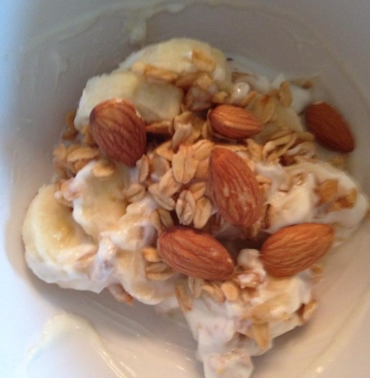

Fruits should always have a place on your grocery list. They are nutritious and also cheaper than most junk food. You can also through them in the blender and make a delicious smoothie. Some great options include: Apples, Bananas, Oranges, Strawberries, Bluberries, Pinneapple, and Frozen fruits.
Vegetables are full of nutrients, low in calorie, and full of fiber. You'll fill up faster and won't have to eat as much. Some great ideas are: Carrots, Broccoli, Spinach, Celery, and any Frozen Veggies.
Protein is an essential component of your diet. Eating lean meats like chicken is one of the best ways to get protein, but that can be difficult while living in a dorm. Some other great ways to get protein are: Greek yogurt, Penut Butter, Nuts, Quinioa, Black Beans, and Frozen chicken
Breads and Grains are meant to be eaten in moderation because they are high in carbohydrates. Always go for whole grain options and limit yourself. Some great ideas are: Whole grain bread or totrtillas (Ezekiel Bread is a great one!), Oatmeal, Whole grain cereal, Granola (less than 8g of sugar) and Brown Rice.
Some great snack options for when you don't have time to make something or if you are on the go: Mixed Nuts, Popcorn, Hummus, and Granola Bars(Some good ones are Lara Bars and Kind Bars)
Most importantly, always always always stay hydrated!!!
Some great brands and ideas are pictured below to give you a visual idea of what you can create!
